Learning Objectives
After completing this lesson, you’ll be able to:
- Create a required user parameter.
- Create a private user parameter.
- Create a Folder type user parameter.
- Control Attribute Assignment for a user parameter.
- Embed/concatenate user parameters inside an FME parameter.
- Create a Choice type user parameter.
- Use a user parameter in a Tester transformer to redirect records.
- Create and use an Attribute Name user parameter.
- Share a user parameter by using it in multiple locations.
Instructions
In this lesson, you will:
- Scroll down to read the text below.
- Optional: You can view the video instead of reading the text. The video covers the text material.
- Complete the exercise by following the steps.
- Complete the Quiz toward the bottom of the page.
- Optional: Let us know if you found this lesson relevant to your role by filling out the survey at the bottom of the page.
- Click 'Next' to mark the lesson complete.
Resources
- Starting workspace
- C:\FMEData\Workspaces\AdvancedDataTransformation\utilize-advanced-user-parameter-techniques.fmw
- Complete workspace
- C:\FMEData\Workspaces\AdvancedDataTransformation\utilize-advanced-user-parameter-techniques-complete.fmw
- Complete advanced workspace
- C:\FMEData\Workspaces\AdvancedDataTransformation\utilize-advanced-user-parameter-techniques-complete-advanced.fmw
- Parks.zip (MapInfo TAB)
- C:\FMEData\Data\Parks.tab
Introduction

In a previous project, you created a workspace to calculate the sizes of neighborhood parks and their average size.
You are working with your FME Flow administrator, Frank, to publish the workspace to FME Flow. Before you publish it, you want to improve some of the functionality and implement a custom translation log.
Frank suggests you carry out the following upgrades:
- Set the output to write to a folder for that user
- Ask whether to filter out dog parks
- Ask which attribute to use to create labels
- Create a translation log in CSV format
1) Open Starting Workspace
- Start FME Workbench (2026.1 or later).
- Open the starting workspace (C:\FMEData\Workspaces\AdvancedDataTransformation\utilize-advanced-user-parameter-techniques.fmw).
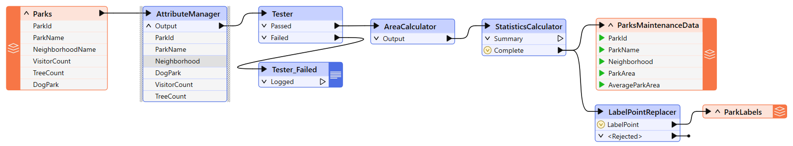
You can see that the workspace reads some MapInfo parks data, filters out dog parks, calculates park area and average area, creates labels, and writes out the data out to DWG.
There are two existing published parameters - one for the source dataset and one for the destination:
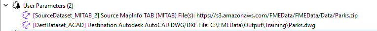
Since the source dataset will never change, we will create a new parameter for the destination and delete these two parameters. Delete them both now.
2) Add User Parameter
If we write the output to a folder specific to the current user, we need to know who that user is.
- Create a Text user parameter to ask for the user's name.
- Ensure that the Required checkbox is checked and Visibility is set to Always Show.
- We want users to enter a value here.
- Also, make sure to set Value Assignment to Hide Parameter Menu Button, as we don't want users to be able to select an attribute.
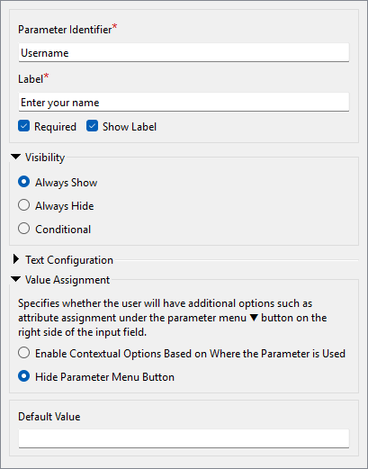
3) Add User Parameter
We can implement the requirements here in various ways; we'll use the version that involves sharing user parameters.
- Create a new File/Folder/URL user parameter.
- Technically, we could use a Text parameter. But the File/Folder/URL option allows the user to browse to specify a path, which is a nicer experience than copying and pasting a path.
- Set the Name field to OutputFolder and the Label to Enter Folder.
- Check Required.
- Set Visibility to Always Hide.
- This parameter will not be visible to the end user, and the author (that's you!) is required to set a value for it.
- Set Items to Select to Folders.
- Set Value Assignment to Hide Parameter Menu Button.
- Set Default Value to C:\FMEData\Output\Training.
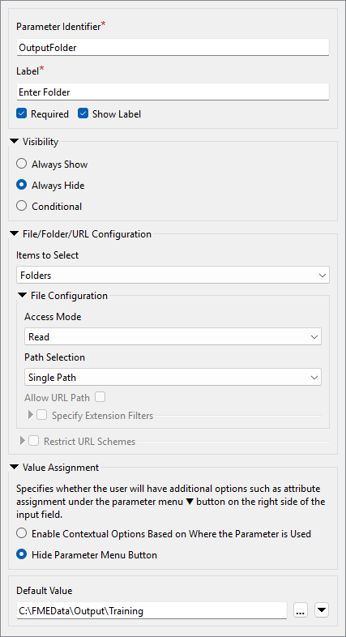
- Click OK.
- If you encounter an Invalid Parameter warning, please double-check that your parameter configuration matches the screenshot above.
- Note that hidden parameters must have a default value, while visible parameters do not require one. You will get this warning if you try to create a hidden parameter without a default value.
4) Set Output Location
Now, let's use the two parameters we've created. Ensure you deleted the two existing source/destination user parameters in step 1; otherwise, this step won't work!
- Locate the Parks[ACAD] writer's Destination Autodesk AutoCAD DWG/DXF File parameter in the Navigator window and double-click it to open the editing dialog.
- In that dialog, manually enter the following:
$(OutputFolder)\$(Username).dwg
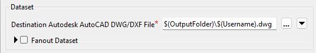
- Alternatively, use the Text Editor, where you can add these by double-clicking them under User Parameters to reduce the chance of error.
You've now concatenated and embedded the two user parameters into the FME parameter.
- Run the workspace.
- FME will prompt you to enter your name, and then it will write the output data to C:\FMEData\Output\Training\<Username>.dwg.
- There are various ways we could have done this. We could have linked the OutputFolder parameter to C:\FMEData\Output\Training\$(Username) and then linked it to the FME Destination AutoCAD parameter. You'll see in a moment why we didn't do that!
5) Add User Parameter
The next task is to check whether dog parks are required in the output. The Tester transformer in the workspace shows that an attribute (DogParks) has a value of Y or N to denote its status. We need to ask the user and add their decision to the Tester.
- Create a new Choice user parameter.
- Ensure Required is checked.
- Set Choice Configuration to Standalone checkbox.
- This option presents the user with a checkbox. Internally, the values are stored as YES (checked) and NO (unchecked).
- Set Default Value to unchecked.
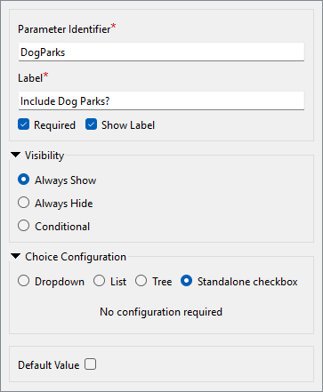
6) Update Tester
We can use the new DogParks parameter in the Tester to control the filtering behavior.
- Open the Tester parameters dialog.
- Add a second Test Clause:
$(DogParks) = Yes
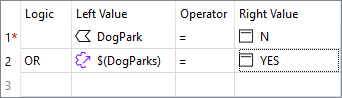
- Ensure the Logic column is set to OR.
- When the workspace runs, the Tester will filter out dog parks if you choose not to use them. This concept of directing features depending on the value of a user parameter is beneficial to be aware of.
7) Add User Parameter
The next task is to allow the user to pick which attribute to use for a label.
As noted in the previous training section, if we publish the label parameter in the LabelPointReplacer, the user can enter text and select an attribute. We want them to have to select an attribute and not be able to enter text.
- Create a new user parameter of type Select Attribute.
- Set Parameter Identifier to LabelAttribute and Prompt to Select the Label Attribute.
- Uncheck Required.
- The user failing to select an attribute is equivalent to saying "no labels required."
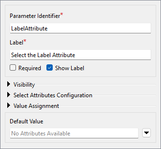
- Click OK to close the Parameter Manager.
- Click the Run button and see what appears in the list of prompts.
- Observe a parameter with the prompt "Select the label attribute."
- But look! The parameter shows "No Attributes Available." Why is this?
- This is because the list of available attributes depends on where the parameter is used. Since we have yet to use the parameter, no attributes are available!
- What if we used the parameter in a location with attributes A and B and a different location with attributes B and C? In that case, the only attribute available to the parameter is B. A parameter of this type will only show attributes that exist in all places used.
8) Update LabelPointReplacer
Now, let's use the LabelAttribute user parameter to let the user choose the attribute used to label the points.
- Open the LabelPointReplacer parameters.
- Remember (again from the previous section) that we can't just apply this user parameter to the Label FME parameter. That would return the attribute's name; we want the attribute value.
- So, for the Label parameter, open the Text Editor and enter:
@Value($(LabelAttribute))
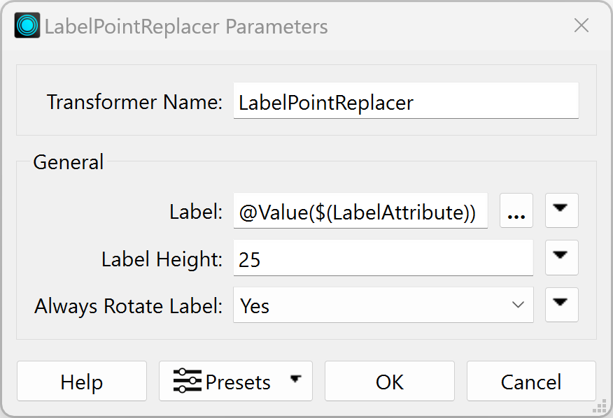
- Observe that we are using the
@Value() function to retrieve the value of the attribute name stored in the user parameter LabelAttribute.
- If you were to set the Label parameter to the user parameter directly, e.g.,
$(LabelAttribute) without the @Value() function, the transformer would set the label to the attribute name instead of the value of that attribute.
- Run the workspace.
- You are prompted to select an attribute to label the parks. If you choose no attribute (just point features), the LabelPointReplacer will not create any labels.
9) Add Log Writer
The final task is to create a custom CSV log. That is easy to do.
- Use Build > Writers > Add Writer to add a new CSV format writer with the following setup:
| Writer Format |
CSV (Comma Separated Value) |
| Writer Dataset |
C:\FMEData\Output\Training |
| Writer Parameters |
Overwrite Existing File: No
Write Field Names Row: If Writing First Row |
| Add Feature Type(s) > CSV File Definition |
Manual... |
- Click OK.
- The dialog will open for you to define the table schema.
- On the Parameters tab, set the CSV File Name to TranslationLog:
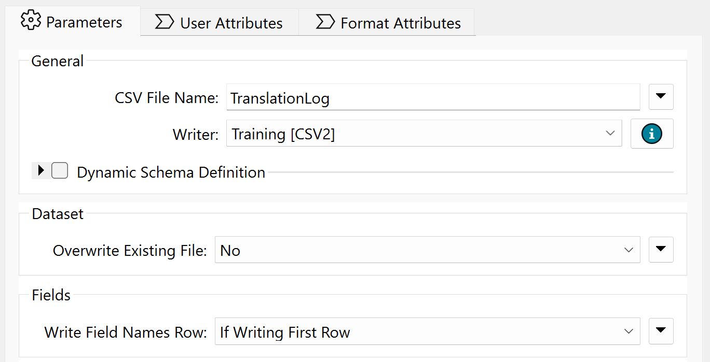
- In the User Attributes tab, define the attributes
User and Date:
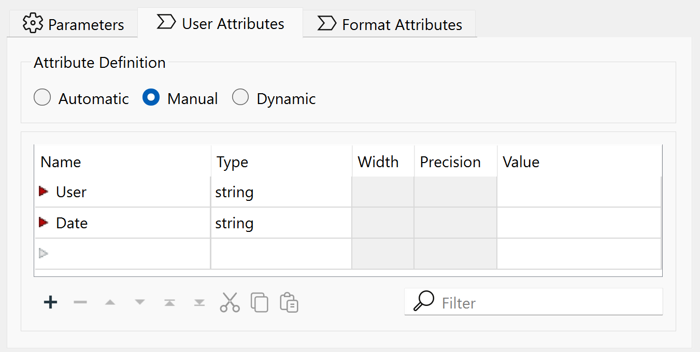
- Click OK to close the dialog.
10) Connect Feature Type
We need a single record to trigger this feature type, but only one feature; otherwise, we will get multiple records.
- Place a Creator transformer and connect it to the TranslationLog writer feature type.
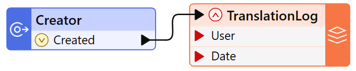
11) Set Output Folder
We should set the output location for the log relative to where the user files are being written.
- Locate the Destination CSV Folder parameter for the Training [CSV2] writer, right-click on it, and choose Link to a Parameter.
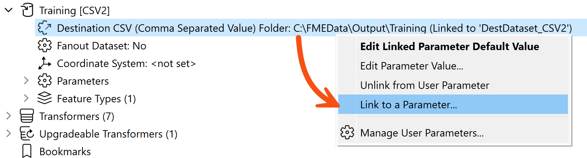
- When prompted, select the OutputFolder parameter we created earlier.
- You might be wondering what the point of that last part was. Why did we link the parameter when both were already pointing to the same folder?
- The point is that the AutoCAD and CSV writers now share a parameter defining their output folder. If we wish to change where they are being written, we only need to edit the private parameter to fix both writers. That's why we did what we did in step #4.
- If you don't believe me, try it and find out for yourself!
12) Set User Attribute
The last step is to provide values for the User and Date fields of the translation log (CSV writer).
- Ensure the TranslationLog writer feature type is expanded so its attributes are visible.
- Right-click on the attribute called User on the TranslationLog writer feature type and choose the option to Edit Value.
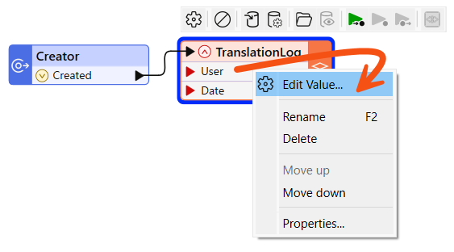
- In the dialog that pops up, enter $(Username) for the Value (you'll be prompted to select it as soon as you start to type).
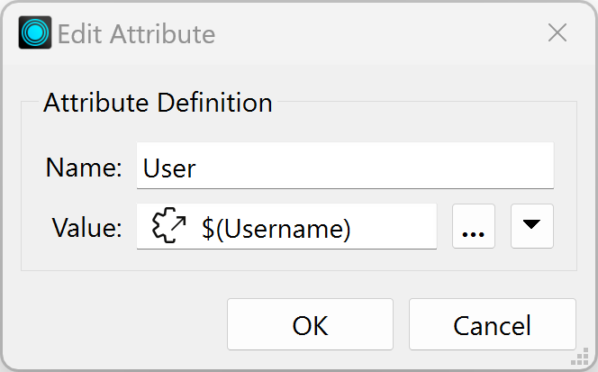
This is another example of sharing user parameters. This parameter is now used here and in the ACAD writer name.
13) Set Date Attribute
Now we have to provide a value to the Date attribute.
- Repeat the above step for the
Date attribute, but this time enter the DateTimeNow() function instead of a user parameter.
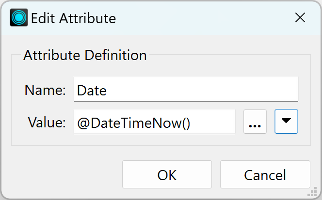
- We are done! Save the workspace and then run it.
- You should find that FME wrote your choice of data (with or without labels) to a folder under your name and added a translation record to the CSV file in the main folder. FME will add a row to the CSV each time the workspace runs, keeping a record of the translation.
Optional Challenge: Control Rounding with Parameter, Improve Log
If you have time for one more task, add a transformer to round the ParkArea and AverageParkArea attributes and create a user parameter to control how that rounding occurs? You can choose any parameter that would be best for allowing the user to select the number of decimal places to round to. It could be a Choice parameter, a Choice with an Alias parameter, a Number parameter, or something else.
You could also expand on the information in the CSV log file; for example, add the build of FME used in the translation, which is available as a parameter called $(FME_BUILD_NUM).
Challenge Answer: Open after attempting the challenge.
- Refer to the complete advanced workspace (C:\FMEData\Workspaces\AdvancedDataTransformation\utilize-advanced-user-parameter-techniques-complete-advanced.fmw) to see the answer.
- For the rounding attribute, you can use a Number user parameter set to integer with a minimum of zero and a maximum of five.
- You can then link that to the Decimal Places parameter in an AttributeRounder being used on the average attributes.
- For the log, you can add a BuildNumber attribute using an AttributeCreator or by defining one on the writer feature type and using Edit Value. Set it equal to $(FME_BUILD_NUM).